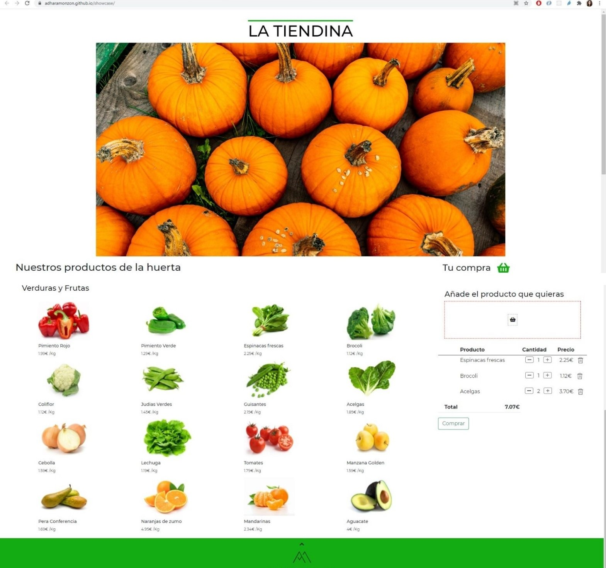
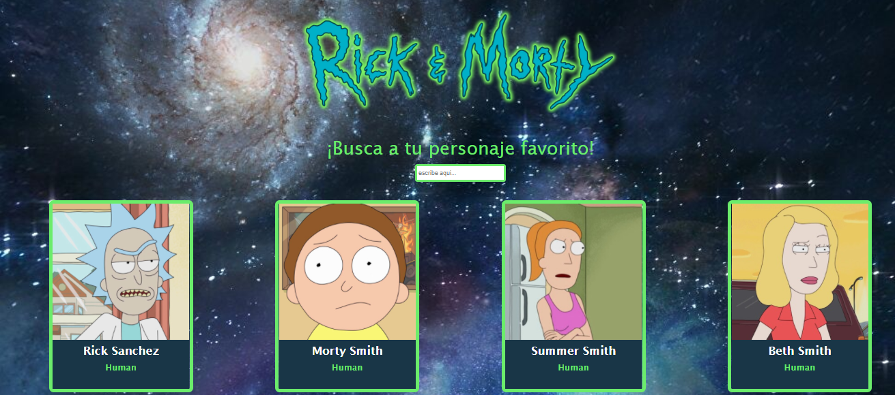
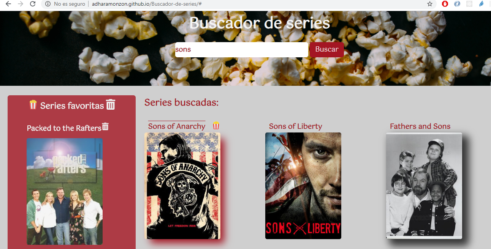
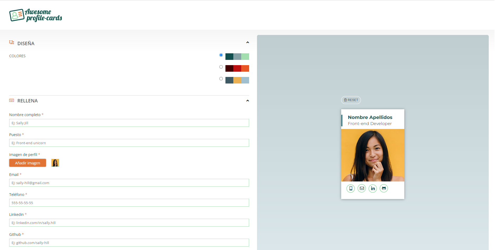
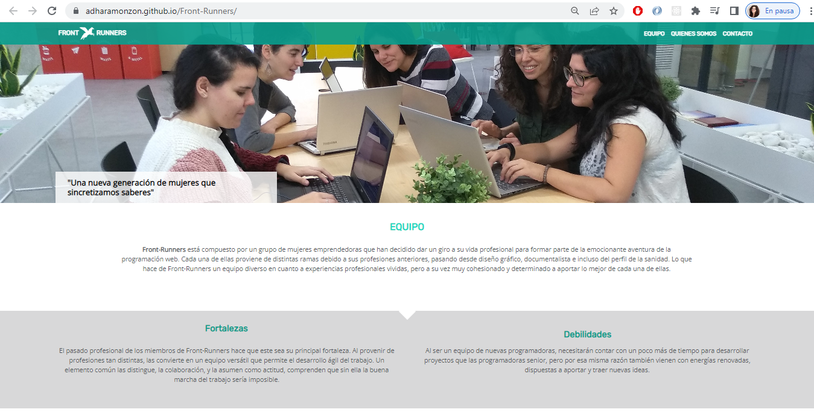

-
La tiendina
La tiendina es una página web con diseño responsive. La estructura está desarrollada con HTML5. La maquetación está desarrollada a través de CSS3 y Bootstrap. La funcionalidad se ha desarrollado con JavaScript basada en un e-commerce en el que se representa toda la funcionalidad de una tienda virtual.
Desde la tienda se pueden ver la lista de productos y su precio. Para más información sobre el producto y poder añadirla al carrito se ha creado una ventana modal, con el título y fotografía del producto, información extra y los botones para incluir e incrementar y eliminar. Con su descripción y la posibilidad de añadirlo a la cesta de la compra.
Desde la cesta de la compra se pueden sumar y restar elementos ya añadidos previamente de 1 en 1 o borrar por el contrario un producto completamente. El carro de la compra se actualiza de manera dinámica el precio total y el precio por producto según el número de productos.
En la cesta también se encuentra una zona de Drag & Drop para poder arrastrar los productos y así añadir y actualizar la cesta.
 -
Rick & Morty
Rick y Morty es una applicación web con diseño responsive. La estructura está desarrollada con HTML5. La maquetación está desarrollada a través de CSS3, Sass con nomenclatura BEM. La funcionalidad se ha desarrollado con JavaScript utilizando el framework de React.js.
Desde la aplicación se pueden ver la lista de personajes. Para más información sobre el personaje se puede pinchar en el que lleva a una nueva venta con React Router.
 -
Buscador de series
El buscador de series es una página web con diseño responsive. La estructura está desarrollada con HTML5. La maquetación está desarrollada a través de CSS3con el preprocesador de Sass y nomenclatura BEM. La funcionalidad se ha desarrollado con JavaScript.
Desde el buscador de series aparece un navegador en el que buscar la serie, se puede lanzar la búsqueda a través del boton de buscar o pulsando intro. Se mostrará la lista de las series encontradas según el nombre. Como funcionalidad extra se puede marcar las series favoritas. Para una mejor experiencia de usuario al tener una película como favorita se marcará un sombreado en rojo y unas palomitas, a la vez que se incluirá a la lista en la izquierda de la pantalla.
En la lista de favoritos se pueden quitar las series de una en una con el botón de papelera o se puede eliminar toda la lista con el botón de papelera al inicio de la lista.
 -
Awesome Cards
Awesome Cards es una aplicación web con diseño responsive. La estructura está desarrollada con HTML5. La maquetación está desarrollada a través de CSS3, Sass con nomenclatura BEM. La funcionalidad se ha desarrollado con JavaScript.
Esta aplicación web sirve para crear tarjetas profesionales personalizadas. Con una primera página landing, que nos explica el proyecto y nos lleva a la aplicación.
En la aplicación contamos con una vista previa de nuestra tarjeta profesional que se actualiza de manera automática según las opciones que marquemos en el menú colapsable de la izquierda. En este menú podemos elegir la paleta de colores para nuestra tarjeta. Rellenar un formulario completo para que aparezcan nuestro datos y datos de contacto interactivos, este formulario tiene controlador de errores, que evitará la creación de una tarjeta a la que le falten datos obligatorios. Por último una sección de compartir en la que nos generará el enlace de la tarjeta.
Este proyecto se ha creado directamente con JavaScript pero en una segunda fase se ha refactorizado utilzando React.
En el proyecto se han utilizado una filosofía agile, con sprints semanales. Organizando el trabajo de manera agile bajo la metodología Scrum.
 -
Front Runners
Front Runners una página web con diseño responsive. La estructura está desarrollada con HTML5. La maquetación está desarrollada a través de CSS3con el preprocesador de Sass y nomenclatura BEM. Utilizando grid y flexbox para la distribución del contenido.
Esta página web con diseño responsive, es la primera página web que hice cuando comencé con la programación. Es una página web sencilla, marcada la estructura con HTML haciendo especial incapié en el uso correcto de las etiquetas y poniendo en valor la accesibilidad de la web. También es el primer ejercicio de maquetación, el proyecto se ha hecho al pixel con un diseño dado a través de Zepelin y utlizando distintas propiedades y preprocesadores para poder realizar un buen trabajo.
En el proyecto se han utilizado una filosofía agile, con sprints semanales. Organizando el trabajo de manera agile bajo la metodología Scrum.
 -
En github verás otros proyectos que he ido realizando, de cursos que he realizado para seguir formandome en JavaScript, TypeScript o Angular y proyectos personales.